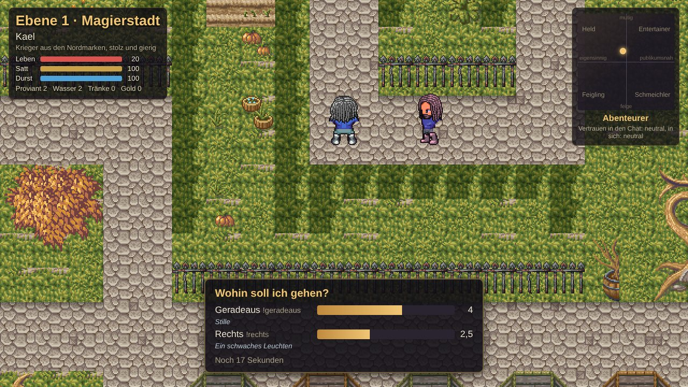
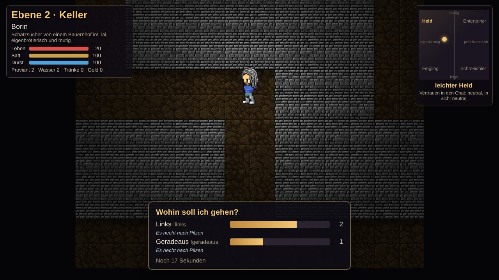
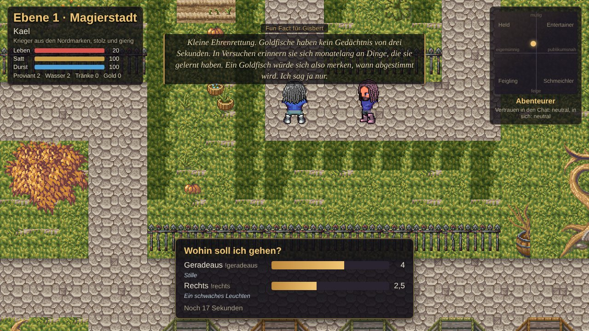
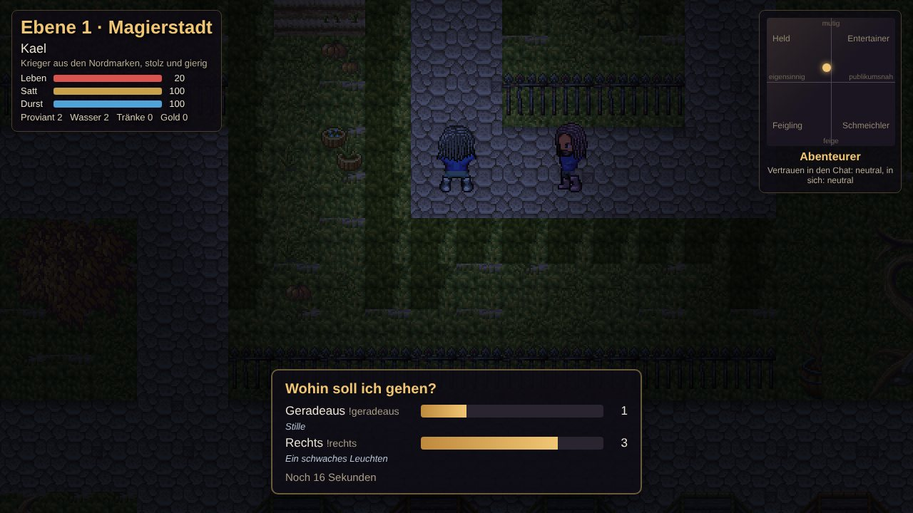
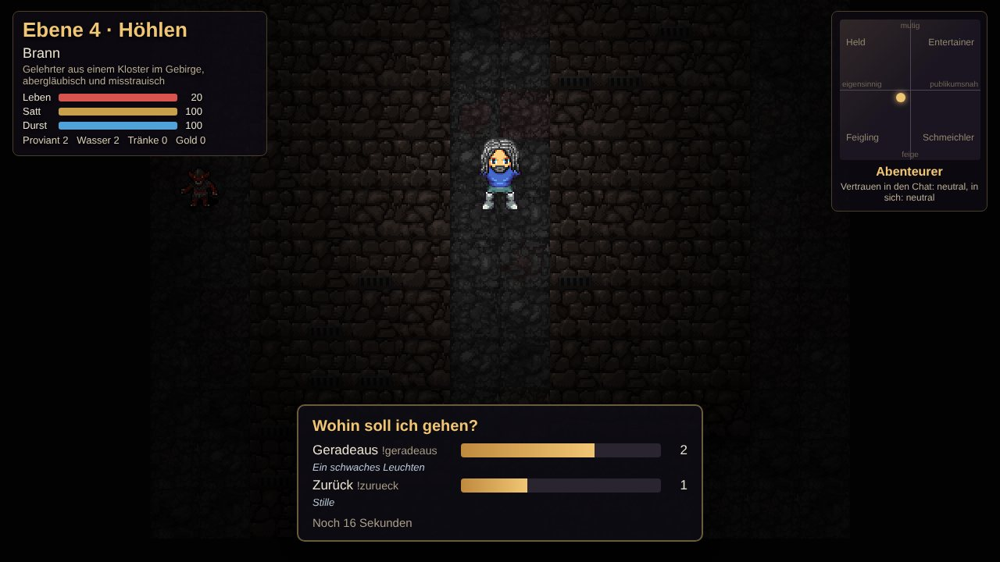
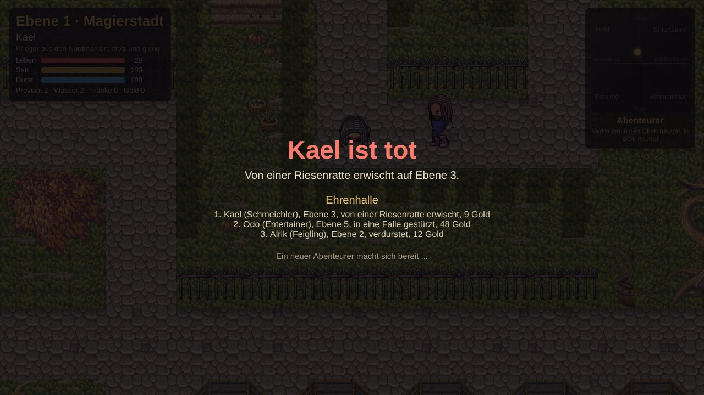
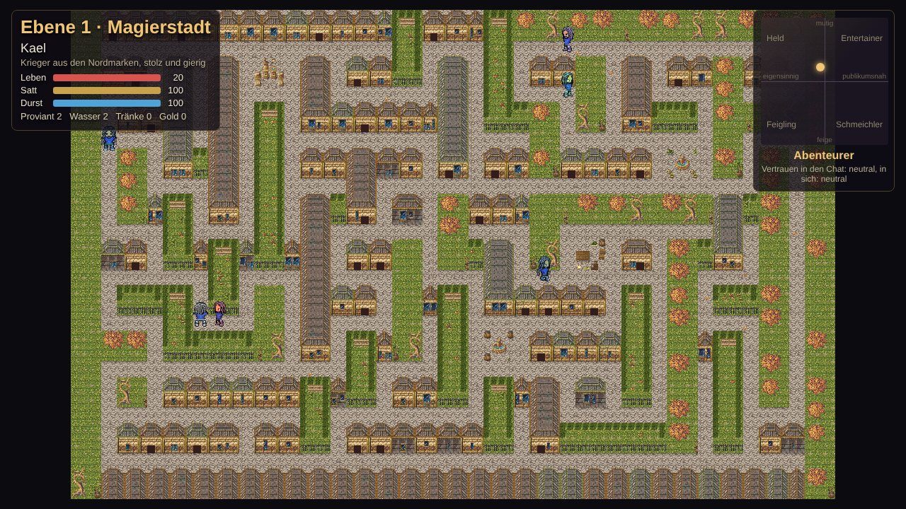
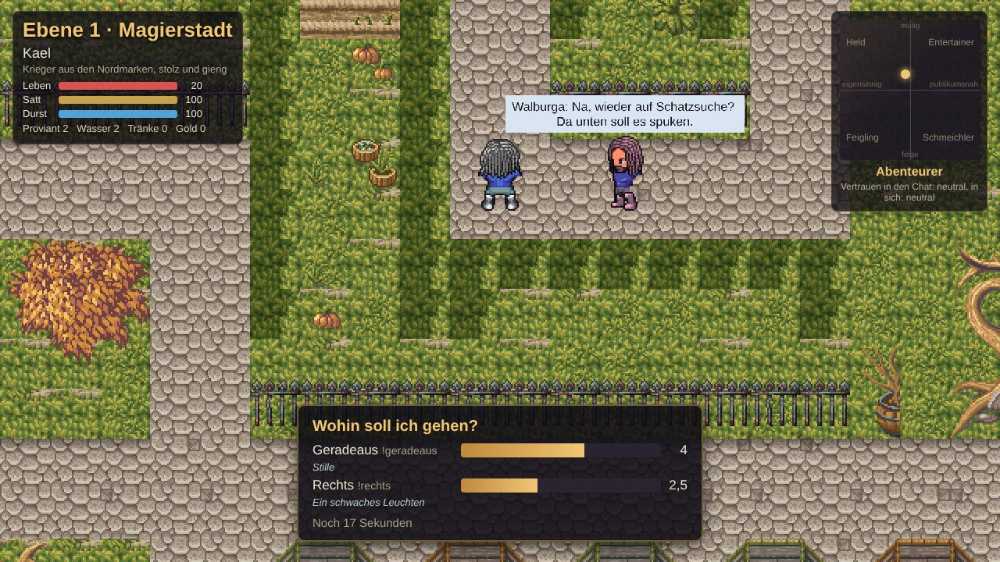
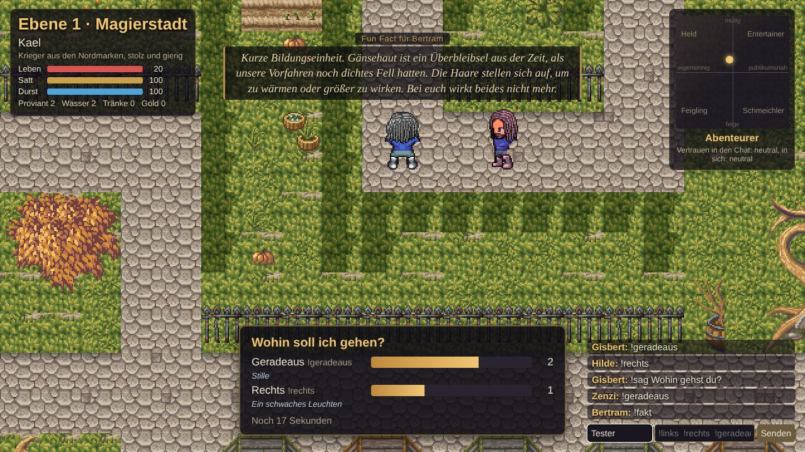
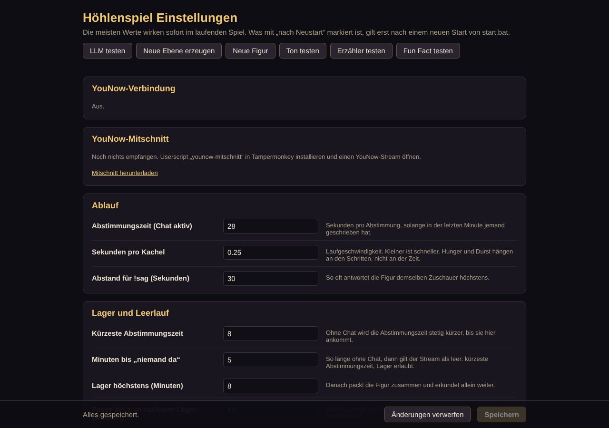

Worum geht es?
Im Mittelpunkt steht eine Figur, die weitgehend selbstständig lebt. Sie hat einen Namen, eine Herkunft, eine Klasse, Eigenheiten und eine eigene Sprechweise. Gesteuert wird sie von einem Sprachmodell (LLM). Sie weiß, dass sie auf Sendung ist, und spricht den Chat direkt an.
Ihr Ziel ist einfach: so lange wie möglich überleben. Sie läuft durch ein Labyrinth aus Gassen, findet Vorräte und Truhen, kämpft gegen Monster, tappt in Fallen und sucht die Treppe nach unten. Jede Ebene wird neu erzeugt, und je tiefer es geht, desto gefährlicher wird es.
Der Chat greift nur begrenzt ein. An jeder Kreuzung wird abgestimmt, wohin es geht. Mit Geschenken und Likes lässt sich die Figur bestechen. Und über ihre Erfahrungen mit dem Chat verändert sich ihr Charakter: Wer ihr hilft, gewinnt ihr Vertrauen, wer sie in Sackgassen schickt, verliert es.


Autonom
Ohne Chat entscheidet die Figur selbst und läuft weiter. Das Spiel kann rund um die Uhr laufen.
Mitbestimmen
An Kreuzungen stimmt der Chat ab. Die Mehrheit entscheidet, die Figur darf maulen.
Endgültig
Stirbt die Figur, ist sie weg. Sie kommt in die Ehrenhalle, und eine neue Figur beginnt.
Chat-Befehle
| Befehl | Kurz | Wirkung |
|---|---|---|
!links | !l | Stimme für eine Richtung, solange an einer Kreuzung abgestimmt wird. Angeboten werden nur Richtungen, die es dort gibt. |
!rechts | !r | |
!geradeaus | !g | |
!zurueck oder !zurück | !z | |
!sag <Text> | Die Figur antwortet dir persönlich. Pro Zuschauer höchstens alle 30 Sekunden. | |
!fakt | !fact, !funfact | Die Erzählerin erzählt einen Fun Fact. Für alle zusammen höchstens alle 90 Sekunden. Im Bild steht „Fun Fact für <dein Name>“. |
So läuft eine Abstimmung


- Die Figur bleibt an der Kreuzung stehen. Unten erscheint „Wohin soll ich gehen?“ mit den möglichen Richtungen, einem Balken pro Richtung und der Restzeit.
- Unter jeder Richtung steht ein Hinweis, etwa „Stille“, „Es riecht nach Gemüse“ oder „Etwas glitzert im Schatten“. Die Hinweise beruhen auf dem, was wirklich in dem Gang liegt. Sie sind aber nicht immer zuverlässig, manchmal führen sie in die Irre.
- Jeder Zuschauer hat eine Stimme. Umentscheiden ist erlaubt, es zählt die letzte.
- Die Mehrheit entscheidet und ist bindend. Bei Gleichstand entscheidet der Zufall.
- Stimmt niemand ab, entscheidet die Figur selbst, nach ihrem Charakter und ihrem Gedächtnis: Sie bevorzugt Gänge, die sie noch nicht kennt.
- Ist der Chat länger still, werden die Abstimmungen kürzer, damit die Figur nicht ewig an Kreuzungen wartet.
Bestechung
Wer der Figur etwas schenkt, bekommt bei der Abstimmung mehr Gewicht. Absolutes Überstimmen gibt es nicht, aber ein großzügiger Zuschauer kann eine knappe Abstimmung kippen. Auch zum Trollen.
- Geschenke: Jedes Geschenk wird nach seinem Wert in Likes umgerechnet. Pro 1.000 Likes Wert gibt es eine Zusatzstimme, mindestens aber eine halbe.
- Normale Likes: Likes von Top-Fans zählen auch, pro 20 Likes eine Zusatzstimme. Das ergibt eher kleine Beträge.
- Die Zusatzstimmen gelten für die laufende Abstimmung, sobald du abgestimmt hast, sonst für die nächste. Danach sind sie verbraucht.
- Bestechung ist öffentlich: Im Bild steht, wer wie viel gegeben hat. Die Figur kennt den Namen, bedankt sich und merkt sich, wer sie gut behandelt.
- Gegenbieten ist ausdrücklich erlaubt. Die letzten Sekunden einer Abstimmung können spannend werden.
Hinweis: Wie viele Likes eine Zusatzstimme kostet, legt der Streamer auf der Einstellungsseite fest. Die Werte oben sind die Vorgaben.
Was man im Bild sieht


Oben links: Status
Ebene und Gebiet, Name und Beschreibung der Figur, Balken für Leben, Satt und Durst, dazu Vorräte: Proviant, Wasser, Heiltränke, Gold.
Oben rechts: Charakter
Ein Kreuz mit einem wandernden Punkt zeigt, wie mutig und wie publikumsnah die Figur gerade ist, darunter der Archetyp und das Vertrauen.
Unten: Abstimmung
Richtungen mit Hinweisen, Stimmenbalken und Restzeit.
Sprechblasen
Was die Figur sagt, Antworten auf !sag, Gespräche mit Bewohnern.
Untertitel oben
Die Erzählerin in kursiver Schrift, bei Fun Facts mit dem Namen dessen, der ihn angefordert hat.
Unten links: Chat
Optional: die letzten Chatnachrichten, falls der Streamer das eingeschaltet hat.
Gebiete und Tageszeit
| Ebene | Gebiet | Wie es aussieht |
|---|---|---|
| 1 | Magierstadt | Gassen, Häuserblöcke, Plätze mit Brunnen, Märkten und Statuen, Gärten und Parks. Jede Karte würfelt ihr Viertel: Marktviertel, verfallenes Viertel oder Gartenviertel am Stadtrand. |
| 2 | Keller | Gewölbe unter der Stadt, dunkel, mit Lichtkreis um die Figur. |
| 3 | Katakomben | Gräber und Särge, noch dunkler. |
| ab 4 | Höhlen | Kein Tageslicht mehr. Hier wird es richtig gefährlich. |




Auf jeder Ebene gibt es eine Treppe nach unten. Wo sie liegt, muss die Figur erst finden. Die Karte deckt sich nur dort auf, wo sie schon war.
In der Stadt folgt das Licht der echten Uhrzeit: morgens rötlich, tagsüber hell, ab 17 Uhr Abendrot, ab 20 Uhr blau, nachts Dunkelheit mit Lichtkreis. Die Figur weiß, wie spät es ist, und kommentiert das gelegentlich.
Überleben und Tod
- Leben: 20 Punkte. Kämpfe und Fallen kosten Leben, Heiltränke geben welches zurück.
- Satt und Durst: je 0 bis 100. Beides sinkt mit jedem Schritt, Durst schneller als Hunger. Ist ein Wert bei null, sinkt das Leben.
- Vorräte: Proviant, Wasserflaschen und Heiltränke werden automatisch benutzt, wenn es nötig ist. Gold sammelt sich einfach an.
- Begegnungen: Monster, Truhen, Fallen und Brunnen. Kämpfe und Fallen werden ausgewürfelt, die Figur hat dabei einen kleinen Bonus.
Der Tod ist endgültig. Die Figur kommt mit Name, Archetyp, erreichter Tiefe und Todesursache in die Ehrenhalle, die nach dem Tod kurz eingeblendet wird. Danach beginnt eine neue Figur mit neuer Persönlichkeit wieder in der Stadt.


Hinweis: Die Ehrenhalle merkt sich die letzten 20 Figuren, solange das Spiel läuft. Nach einem Neustart des Servers beginnt sie leer.
Charakter der Figur
Jede Figur hat eine feste Persönlichkeit: Name, Herkunft, Klasse, zwei klare Eigenschaften und eine Sprechweise. Daneben verändert sich ihre Haltung mit der Zeit, auf zwei Achsen:
- Feige bis Mutig: verschiebt sich durch Kämpfe, Fallen, Beinahe-Tode und Schätze.
- Eigensinnig bis Publikumsnah: verschiebt sich durch das Verhältnis zum Chat. Hat der Chat geholfen oder geschadet? Gab es Bestechung? Waren eigene Entscheidungen erfolgreich?
In der Mitte ist die Figur ein Abenteurer. Je weiter der Punkt nach außen wandert, desto ausgeprägter wird der Archetyp. Ein Wechsel wird angekündigt, und ab dann spricht und entscheidet die Figur entsprechend. Alle Werte wandern mit der Zeit langsam zur Grundhaltung zurück.
Außerdem gibt es Vertrauen: in den Chat insgesamt, in sich selbst und in einzelne Zuschauer. Das beeinflusst den Ton und wie bereitwillig sie Ratschlägen folgt, nicht aber das Ergebnis einer Abstimmung.
Unter allem liegt der Überlebenswille. Er wächst mit der Not. Kurz vor dem Tod übernimmt er ganz, egal welcher Archetyp gerade gilt.
Lager und Leerlauf
Ist der Chat einige Minuten still, schlägt die Figur ein Lager auf: Feuer machen, ausruhen, kochen. Gekochtes macht satter als roher Proviant, Hunger und Durst sinken im Lager nur langsam.
- Das Lager dauert höchstens 8 Minuten. Danach erkundet die Figur mindestens 10 Minuten allein weiter, bevor sie wieder lagert.
- In der Stadt zoomt die Karte nach 2 Minuten im Lager heraus und zeigt die ganze Stadt mit ihren Bewohnern. Gegenstände sind in dieser Übersicht ausgeblendet.
- Sobald jemand schreibt oder etwas schenkt, packt die Figur zusammen, begrüßt den Besuch und es geht weiter.


Stadtbewohner
In der Magierstadt laufen Bewohner durch die Gassen, tagsüber fünf, nachts zwei. Jeder hat einen Namen, einen Beruf und eine Eigenheit: schwerhörig, abergläubisch, reimt ohne es zu merken, hält sich für einen großen Denker.
- Grüße im Vorbeigehen: Läuft die Figur an jemandem vorbei, gibt es einen kurzen Wortwechsel, ohne dass sie anhält. Auch Bewohner grüßen sich untereinander.
- Gespräche: Trifft die Figur an einer Kreuzung oder im Lager auf einen Bewohner, kommt es zu einem richtigen Gespräch, manchmal mit philosophischem Einschlag. Bewohner reden auch miteinander, wenn sie sich in Sichtweite begegnen.
- Nützliches: Manchmal verrät ein Bewohner, in welcher Himmelsrichtung die Treppe liegt, oder schenkt der Figur ein Stück Brot.


Erzählerin und Fun Facts
Eine Erzählerin kommentiert das Geschehen von außen: neue Gebiete, Kämpfe, Fallen, Truhen, Sackgassen, Bestechungen, den Tod, den Wechsel von Tag und Nacht. Die Sprüche sind vorbereitet und vertont, sie kommen als Untertitel und als Stimme. Damit sie nicht nervt, gibt es Mindestabstände, und kleine Anlässe kommentiert sie nur gelegentlich.
Dazu kommen über 200 Fun Facts über Höhlen, Fledermäuse, Pilze, Ratten, Mittelalter, Alchemie, Aberglaube, Wortherkunft und Spielegeschichte, frech und mit einem Seitenhieb auf den Chat. Sie kommen von selbst in ruhigen Momenten, etwa alle 8 Minuten, oder auf Wunsch mit !fakt.
Installation (Windows)
Voraussetzungen
- Python 3.10 oder neuer. Bei der Installation den Haken „Add to PATH“ setzen.
- Git, um das Spiel herunterzuladen und später zu aktualisieren.
- Ein Sprachmodell für die Figur: entweder lokal mit llama-server und einer GGUF-Modelldatei auf einer Grafikkarte, oder über eine OpenAI-kompatible API. Ohne LLM läuft das Spiel auch, die Figur ist dann aber stumm. Siehe Sprachmodell.
- OBS Studio zum Streamen.
- Optional cloudflared, um das Spiel ohne Stream im Internet zu zeigen.
Herunterladen und starten
- Spiel herunterladen:
git clone https://github.com/primeschakal-png/younow-hoehlenspiel.git cd younow-hoehlenspiel start.batdoppelklicken. Beim ersten Start richtet sie eine eigene Python-Umgebung ein und installiert die nötigen Pakete. IstLLAMA_START=1gesetzt, startet sie vorher den llama-server und wartet, bis er bereit ist. Läuft schon einer auf dem Port, wird er mitgenutzt.- Der Browser öffnet
http://localhost:8000/?testchat=1. Unten rechts ist ein Test-Chat mit Namensfeld. Damit kannst du mehrere Zuschauer spielen und alle Befehle ausprobieren.
Der Test-Chat unten rechts: mehrere Namen, Stimmen, eine Frage an die Figur und ein Fun Fact. - Auf
http://localhost:8000/einstellungenträgst du deine Werte ein, zuerst Pfad zu llama-server und Modell oder die API. Werte, die einen Neustart brauchen, sind dort gekennzeichnet.

Aktualisieren
git pullDanach das Spiel neu starten. Deine Einstellungen in .env, deine Musik und deine vertonten Sprüche bleiben erhalten.
OBS einrichten
- Neue Quelle „Browser“ anlegen.
- URL:
http://localhost:8000/, ohne?testchat=1. Breite 1280, Höhe 720. - Haken bei „Audio über OBS steuern“ setzen. Dann steht der Ton des Spiels als eigene Spur im Audiomixer, und du kannst ihn dort regeln.
- Fertig. In OBS spielt der Ton sofort, im normalen Browser erst nach einem Klick ins Bild.
Tipp: Startet das Spiel neu, verbindet sich die Browserquelle von selbst wieder. Lädt sie einmal nicht, hilft in den Eigenschaften der Quelle „Seite aktualisieren“.
YouNow anbinden
- Auf der Einstellungsseite im Bereich „YouNow“ den Haken „YouNow-Chat lesen“ setzen.
- Den Benutzernamen eintragen, unter dem du streamst.
- Speichern. Das gilt sofort.
Das Spiel liest dann alle paar Sekunden die öffentliche Stream-Info von YouNow. Chatnachrichten und Befehle gehen direkt ins Spiel, Geschenke und Likes werden zu Bestechung. Ein Browser-Fenster oder Zusatzprogramm brauchst du dafür nicht. Im Bereich „YouNow“ der Einstellungsseite siehst du, ob die Verbindung steht und wann zuletzt Daten kamen.
Mit „Chat im Bild anzeigen“ blendest du die letzten Nachrichten unten links im Stream ein.
Verzögerung: YouNow-Streams laufen ein paar Sekunden hinter. Deshalb ist die Abstimmungszeit mit 28 Sekunden bewusst großzügig.
Einstellungsseite
Erreichbar unter http://localhost:8000/einstellungen, und zwar nur vom eigenen PC. Über einen geteilten Link ist sie gesperrt. Die meisten Werte wirken sofort beim Speichern. Gespeichert wird in .env, und zwar nur, was von den Vorgaben in .env.example abweicht.


Oben gibt es Knöpfe zum Testen: LLM testen, Neue Ebene, Neue Figur, Ton testen, Erzähler testen und Fun Fact testen.
| Bereich | Wichtigste Werte (Vorgabe) |
|---|---|
| Ablauf | Abstimmungszeit 28 s, Sekunden pro Kachel 0,25 (Laufgeschwindigkeit), Abstand für !sag 30 s |
| Lager und Leerlauf | „Niemand da“ nach 5 min, kürzeste Abstimmung 8 s, Lager höchstens 8 min, Pause bis zum nächsten Lager 10 min |
| Stadtbewohner | 5 am Tag, 2 nachts, Gespräche der Figur höchstens alle 2,5 min, Herauszoomen nach 2 min im Lager |
| Erzähler | an, Mindestabstand 45 s, Häufigkeit bei kleinen Anlässen 50 %, Fun Facts an, alle 8 min, Sperre für !fakt 90 s |
| Überleben und Balance | Hunger und Durst pro Kachel, Sättigung von Proviant, Gekochtem und Wasser, Heilung durch Tränke, Würfelbonus der Figur |
| Karte | 16 × 10 Kreuzungen, Sichtweite 4 Kacheln (ab der nächsten Ebene) |
| YouNow | Chat lesen, Streamname, Abfrage alle 3 s, Chat im Bild, 1.000 Likes Geschenkwert pro Zusatzstimme, 20 normale Likes pro Zusatzstimme |
| Ton | Ton an, Musik 35, Geräusche 70, eigener Musikordner |
| LLM | an, Adresse, Modellname, API-Schlüssel, Wartezeit 25 s |
| llama-server | mit starten, Port 8080, Pfad zur llama-server.exe, Modelldatei, Kontext 8192, Schichten auf der Grafikkarte, weitere Parameter (wirkt nach Neustart) |
| Webserver | Adresse 127.0.0.1, Port 8000 (nach Neustart), Schlüssel für den Chat über den geteilten Link |
Sprachmodell (LLM)
Das LLM gibt der Figur ihre Stimme: Kommentare an Kreuzungen, eigene Entscheidungen, Antworten auf !sag, Gespräche mit Bewohnern. Ein großes Modell ist dafür nicht nötig, es muss aber gut Deutsch können und zuverlässig kurze JSON-Antworten liefern.
Lokal mit llama-server
Auf der Einstellungsseite unter „llama-server“ den Pfad zur llama-server.exe und zur GGUF-Datei eintragen und „mit starten“ einschalten. start.bat startet den Server dann mit und wartet, bis er bereit ist. Findet sie die eingetragene Datei nicht, nimmt sie einen llama-server aus dem PATH, dann aber ohne die eingetragenen Zusatzparameter.
Über eine API
Jede OpenAI-kompatible API funktioniert, auch günstige kleine Modelle. Auf der Einstellungsseite:
- „llama-server mit starten“ ausschalten.
- Unter „LLM“ die Adresse des Anbieters (endet meist auf
/v1), den Modellnamen und den API-Schlüssel eintragen. - Mit „LLM testen“ prüfen, ob eine Antwort kommt.
Ohne LLM (Haken „LLM benutzen“ aus) entscheidet die Figur nach eigenen Regeln und schweigt. Bewohner benutzen dann vorbereitete Sätze.
Musik und Ton
Geräusche gibt es für Schritte, Kämpfe, Truhen, Treppen, Geschenke und Abstimmungen. Für die Musik gibt es zwei Wege.
Musik je Gebiet (Vorgabe)
Musikdateien in assets/audio/music/ nach Stimmung ablegen: stadt, nacht, keller, katakomben, hoehle. Formate: .mp3, .ogg, .wav, .m4a, .opus, .flac. Das Spiel mischt die passenden Stücke zufällig. Ist ein Ordner leer, nimmt es Musik aus einer ähnlichen Stimmung. Neue Dateien gelten ab der nächsten Ebene.
Eigener Musikordner
Auf der Einstellungsseite unter „Ton“ einen Ordner eintragen, zum Beispiel E:\Musik\StreamBeats. Dann läuft überall eine gemeinsame Playlist in zufälliger Reihenfolge, Unterordner zählen mit. Ein Gebietswechsel unterbricht das laufende Stück nicht. Feld leeren, und es gilt wieder Musik je Gebiet.
Rechte: Im Stream nur Musik verwenden, die das erlaubt, zum Beispiel StreamBeats (kostenlos, ganze Alben über den Google-Drive-Link auf der Albumseite). Eigene Musikdateien landen bewusst nicht im Git-Repo, weil viele Lizenzen die Weitergabe der Dateien verbieten.
Im Lager und nachts wird die Musik leiser. Spricht die Erzählerin, wird sie kurz abgesenkt.
Sprüche vertonen
Die Sprüche der Erzählerin stehen in assets/narrator/narrator.json, die Fun Facts in assets/narrator/funfacts.json. Änderungen gelten sofort. Platzhalter wie {held}, {monster}, {ebene}, {gebiet}, {zuschauer}, {bewohner} und {archetyp} werden im Spiel ersetzt. Solche Sprüche erscheinen nur als Text, weil sie sich nicht vorab vertonen lassen.
Neue Sprüche nur hinten an eine Liste anhängen. Die IDs ergeben sich aus der Reihenfolge (kampf_sieg_03, funfact_17), und ein Einschub würde die Zuordnung schon vertonter Dateien verschieben.
- Export als Hörbuch mit einem Kapitel pro Spruch:
Exportiert werden nur Sprüche ohne Platzhalter, die noch keine Audiodatei haben.python tools\narrator_export.py Sprüche -> assets\narrator\vertonung.epub python tools\narrator_export.py funfacts Fun Facts -> assets\narrator\funfacts.epub - Das EPUB mit einem Vorleseprogramm vertonen, zum Beispiel Booxter. Das EPUB ist als Einzelclips markiert, Booxter legt also keine Kapitel zusammen und liest die IDs nicht vor. Für die Fun Facts eignet sich ein fester Vortragsstil ohne Regie.
- Die fertigen Audiodateien übernehmen:
Die Dateien werden über die ID im Dateinamen zugeordnet und nachpython tools\narrator_import.py E:\buchvertonung\hoerbuecher\Funfacts Hoehlenspielassets\narrator\audio\kopiert.
Eigene Aufnahmen gehen auch: Datei mit der ID als Namen, etwa tod_03.mp3, nach assets\narrator\audio\ legen.
Spiel im Internet teilen
Mit teilen.bat ist das laufende Spiel über einen Cloudflare-Tunnel unter einer öffentlichen Adresse erreichbar, ohne Videostream. Jeder Gast sieht das Spiel live im eigenen Browser, mit Ton. So wird daraus spontan ein kleines Multiplayer-Spiel.
- Einmalig cloudflared installieren:
winget install --id Cloudflare.cloudflared - Erst
start.bat, dannteilen.batstarten. Nach ein paar Sekunden erscheint eine Adresse auf.trycloudflare.com. Sie gilt, solange das Fenster offen ist, und ist bei jedem Start neu. - Zum Mitspielen: Auf der Einstellungsseite unter „Webserver“ einen Schlüssel eintragen, ein Wort ohne Leerzeichen. Dann die Adresse mit diesem Zusatz weitergeben:
https://<adresse>.trycloudflare.com/?testchat=1&key=<Schlüssel>teilen.batzeigt den Zusatz mit deinem Schlüssel gleich unter der Adresse an.
- Ohne Schlüssel können Gäste nur zuschauen.
- Gäste können höchstens eine Nachricht alle 2 Sekunden schicken. Für dich am eigenen PC gilt keine Bremse.
- Die Einstellungsseite ist über den Link immer gesperrt.
- Das Bild passt sich jeder Fenstergröße an. Auf dem Handy am besten quer halten.
- Gäste können im Namensfeld jeden Namen eintragen. Den Schlüssel also nur an Leute geben, denen du vertraust. Feld leeren sperrt das Mitschreiben wieder.
Adress-Zusätze
An die Adresse des Spiels lassen sich Zusätze hängen, mehrere mit & verbunden, zum Beispiel http://localhost:8000/?testchat=1&stunde=22.
| Zusatz | Wirkung |
|---|---|
?testchat=1 | Eingabefeld für den Test-Chat und Chatanzeige |
&key=<Schlüssel> | Mitschreiben über den geteilten Link |
?zoom=1, ?zoom=3 | Vergrößerung der Pixelgrafik, Vorgabe 2 |
?stunde=22 | Tageszeit in der Stadt vortäuschen, zum Ausprobieren des Lichts |
?viertel=0, 1, 2 | Stadtviertel erzwingen: Markt, verfallen, Garten |
Fehlerbehebung
| Problem | Lösung |
|---|---|
| Kein Ton im Browser | Einmal ins Bild klicken, der Browser gibt Ton erst danach frei. In OBS ist das nicht nötig. Auf der Einstellungsseite „Ton testen“ drücken. |
| Kein Ton in OBS | Bei der Browserquelle „Audio über OBS steuern“ anhaken und die Spur im Audiomixer prüfen. |
| Die Figur spricht nicht | „LLM testen“ auf der Einstellungsseite. Läuft der llama-server? Stimmt die Adresse? Im Fenster von start.bat steht, wenn das LLM nicht erreichbar ist. Das Spiel läuft trotzdem weiter. |
start.bat findet das Modell nicht | Pfad zur GGUF-Datei auf der Einstellungsseite prüfen, danach neu starten. |
| „llama-server aus PATH, ohne MTP“ | Der eingetragene Pfad zur llama-server.exe stimmt nicht. Das Spiel läuft, aber ohne die eingetragenen Zusatzparameter. |
| Port 8000 belegt | Läuft das Spiel schon in einem anderen Fenster? Sonst auf der Einstellungsseite einen anderen Port wählen und neu starten. |
| Erzählerin zeigt Text, spricht aber nicht | Für diesen Spruch gibt es noch keine Audiodatei in assets\narrator\audio\, oder er enthält einen Platzhalter. |
| Eigene Musik läuft nicht | Stimmt der Pfad im Feld „Eigener Musikordner“? Liegen dort Audiodateien in einem der genannten Formate? |
| Chat von YouNow kommt nicht an | Ist „YouNow-Chat lesen“ an und der Streamname richtig? Der Statuskasten im Bereich YouNow zeigt, wann zuletzt Daten kamen. |
| Einstellungsseite meldet „gesperrt“ | Sie ist nur vom eigenen PC über localhost erreichbar, nicht über den geteilten Link. |
Aufbau und Lizenzen
server/ Spiellogik in Python: Labyrinth, Figur, Charakter, Abstimmung, LLM, YouNow, Erzähler, Webserver
overlay/ Anzeige im Browser (HTML und Phaser), Einstellungsseite
assets/ Grafik, Ton, Musik, Erzählersprüche und Fun Facts
tools/ Export und Import der Sprüche, Kachelblatt der Unterwelt
docs/ Pflichtenheft, Fahrplan und diese Anleitung
userscript/ Mitschnitt des YouNow-Datenverkehrs zur Analyse (für das Spiel nicht nötig)
start.bat startet llama-server und Spiel
teilen.bat öffentlicher Link über Cloudflare
.env.example Vorgaben aller Einstellungen, eigene Werte landen in .envGrafik und Ton
- Stadt: „Mage City Arcanos“ von Hyptosis, CC0
- Unterwelt, Monster und Gegenstände: „Dungeon Crawl Stone Soup“, CC0
- Spielfigur: LPC-Generator, OGA-BY 3.0
- Geräusche und mitgelieferte Musik: CC0, unter anderem Kenney
Die vollständige Liste mit Quellen steht in assets/CREDITS.md. Die Spielidee ist angelehnt an „Little Computer People“, ist aber ein eigener Neubau ohne Teile des Originals.
Mehr Hintergrund: Pflichtenheft und Fahrplan.